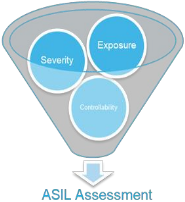
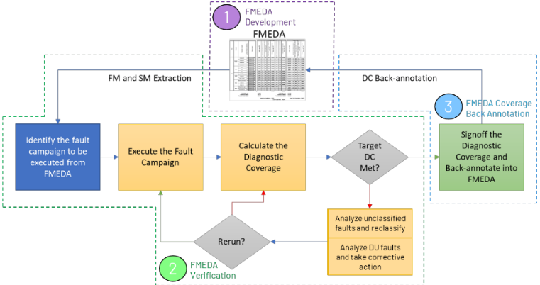
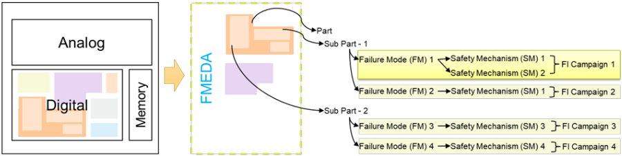
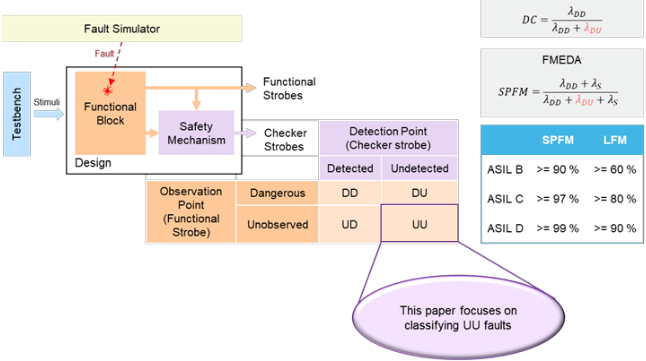
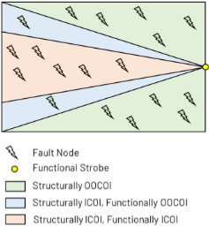
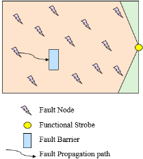
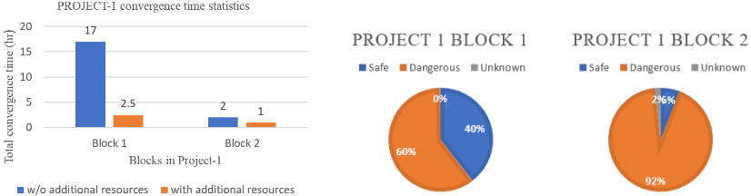
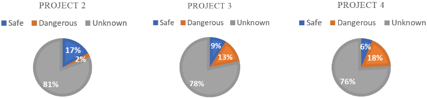
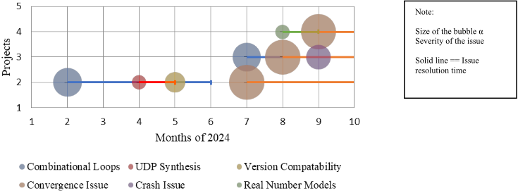
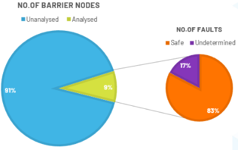

解码未知：Formal 与仿真方法协同分析未分类（UU）故障
论文解决功能安全故障注入 campaign 中大量故障无法分类的问题：这些 UU（Unobserved Undetected）故障既未在功能输出上观测到影响、也未被 Safety Mechanism 检出，必须重分类才能可信地确定 Diagnostic Coverage。方法上先系统梳理 formal 方案（COI 过滤、约束排除 scan logic、propagatability/detectability 分析生成 stimulus trace），并指出其在高时序深度与 mixed-signal 设计中收敛困难、ROI 不佳；随后提出仿真-based Fault Barrier Analysis，将故障传播停止的第一个设计信号定义为 barrier，复用既有 fault simulation 运行、无需额外 setup，输出 barrier-fault 双向映射数据库，按贡献度排序并迭代移除 barrier。结果显示 Project 1（数字密集型）增加资源使 formal 收敛时间降低 85%/50%，而 Project 2/3/4（mixed-signal）中 formal 大量故障仍未分类；Project 2 的 barrier 分析中 66.67% 节点未处理，但大量 barrier 归因于 DFT logic 可经专家判断判为 safe。论文最终建议低时序深度模块用 formal、其余模块用 barrier analysis 的混合策略，以提升 DC 结论置信度。
功能安全故障注入仿真中，大量故障节点初始保持 unclassified（UU：功能上 Unobserved 且未被 Safety Mechanism Undetected），直接威胁 Diagnostic Coverage 结论的可信度；formal 传播性/可检测性分析在 high sequential depth 与 mixed-signal 设计中遇到收敛问题，需要大量人工干预、执行时间长、ROI 不佳，因此需要替代或补充方法对 UU 故障进行分析与重分类。
两条路线对比与协同：(1) Formal 分析：用 formal 工具过滤结构上 out of COI 的故障判为 safe、施加约束排除 scan logic 等非安全关键模块、要求 DV test suite 达到 100% functional coverage、通过 propagatability/detectability 分析生成可将 UU 故障传播到 FO 的 stimulus trace；(2) 仿真-based Fault Barrier Analysis：定义 fault barrier 为故障传播停止的第一个设计信号，复用既有 fault simulation 运行（无需额外 setup），输出 barrier 数据库（barrier ID、barrier node、fanin strength、受影响 fault ID）与 fault-to-barrier 映射（fault ID、fault node、fault type、injection time、fanout strength、barrier ID），按造成 UU 数量降序排列 barrier，优先对贡献最大的 barrier 施加约束或构造 stimulus，迭代移除以逐步减少 UU；利用同类 barrier 特征相似性归类抽样分析、其余标记 reviewed；barrier 与 fault 一对一映射的可直接定分类，归因于 DFT logic 的 barrier 经专家判断判 safe。最终建议按模块时序深度选择 formal（低时序深度、block 级、数字密集型）或 barrier analysis（mixed-signal、chip-top 级）。
Project 1（数字密集型设计）：增加资源（licenses、时间、算力）使 block 1 和 block 2 的 formal 收敛时间分别降低 85% 和 50%，并带来更多收敛（unknown faults 减少）
Project 2、3、4（mixed-signal 设计）：尽管投入大量资源，formal 分析中仍有大量故障未分类；combinational loops 是所有项目中最关键、耗时最长的问题，其后 convergence issues 至今未解决
Project 2 的 fault barrier 分析：尽管分析了大量节点，仍有 66.67% 未处理；改用一次性分析所有 barrier 节点的实验方法可行但耗时耗人力，利用同类 barrier 特征相似性归类抽样可缓解
Project 2 中大量 barrier 归因于 DFT logic，对应故障可经专家判断分类为 safe
formal 与仿真方法在 UU 故障上的最终对比结果将在 final presentation 中给出，论文正文未提供最终 DC 数值
相对已有工作（文中引用 [1][2] 的 formal propagatability/detectability 分析），主要创新是提出仿真-based Fault Barrier Analysis：将 UU 故障归因于故障传播路径上的 chokepoint/barrier，复用既有 fault injection 仿真运行、无需额外 setup，自动生成 barrier-fault 双向映射数据库并按贡献度排序，指导约束/stimulus 生成与迭代 barrier 移除；并给出 formal 与仿真方法在数字密集 vs mixed-signal、block 级 vs chip-top 级场景下的系统性对比与按模块混合使用的工程建议。
相关度级别：high
命中能力域：2.5 功能安全与安全机制 | 2.6 Fault simulation/Z01X/TFMEA | 2.1 DFT/ATPG/门级验证
理由：论文核心是 ISO 26262 故障注入 campaign 中 UU 故障重分类与 DC 收敛，直接命中 2.5（FMEDA、DC/SPFM/LFM、Safety Mechanism 有效性验证、safety verification 证据链）与 2.6（基于功能 stimulus 的 fault injection、fault grading、observability/detectability 分析、与 TFMEA/FMEDA 论证关联）；同时论文明确指出大量 barrier 归因于 DFT logic（scan logic 约束排除、专家判 safe），且仿真方法不支持 GLS SDF annotation testbench，与 2.1 中 ATPG/gate-level 仿真及 DFT 逻辑在 FuSa fault campaign 中的 waiver/exclusion 处理直接相关。对团队 LPDDR/HBM4/UCie 等含 mixed-signal PHY 的 IP 做功能安全 fault injection 与 DC sign-off 具有直接落地价值。
建议动作：深入精读并做内部分享
摘要 - 在故障注入仿真过程中，注入的故障可以被安全机制（SM）检测到，和/或可以被观测到对设计功能产生影响。诊断覆盖率（DC）是评估SM有效性的关键度量指标。虽然达到目标DC是最终目标，但确保以高度置信度实现这一目标同样至关重要。未分类故障——即功能上未观测到且未被SM检测到（UU）的故障——必须经过仔细分析并重新分类，才能有把握地最终确定所达到的DC。本文提出基于仿真的故障屏障分析（Fault Barrier Analysis）作为一种创新方法，并着重强调其在特定设计场景下相对于传统形式化方法的优势。文中探讨了基于形式化方法的UU分析所面临的挑战。同时，本文还提供了将形式化方法与仿真技术进行对比的全面分析。两种方法所得出的结果提供了宝贵的见解，有助于用户根据自身设计需求选择最适合的UU故障分析方法。在基于形式化方法的分析达到饱和之后，项目2目前正在实施基于仿真的方法，并已取得令人鼓舞的成果。
功能安全（FuSa）确保系统正确响应其输入，并安全地处理潜在故障，以防止风险或危害的发生。ISO 26262 是公认的汽车电气与电子系统功能安全标准。它为整个汽车供应链提供了 FuSa 开发流程，还提供了一种汽车行业专用的风险等级确定方法，即汽车安全完整性等级（ASIL），如图 1 所示。
ASIL 评估基于三个参数：

ISO 26262 推荐将故障注入作为一种方法，用于

FMEDA 是一种系统化的分析技术，其中 FuSa 设计被表示为部件（part）、子部件（sub-part）和基本子部件（elementary sub-part），并确定各自估算的诊断覆盖率（DC）和单点故障度量（SPFM）。这构成了故障注入活动的基础，如图 3 所示。

在故障注入活动期间，故障根据其影响和检测情况进行分类。如果故障影响了功能输出（FO），则被视为危险的；如果故障在校验器输出（CO）上被检测到，则被标记为已检测。对两种输出均无影响的故障被标记为未观测或未检测。因此，故障被归类为安全（S）、危险已检测（DD）、危险未检测（DU）、未观测未检测（UU）和未观测已检测（UD）。诊断覆盖率（DC）通过分析 DD 和 DU 故障来确定，而 SPFM 和潜在故障度量（LFM）的计算则纳入 S、DD 和 DU 故障，如图 4 所示。安全故障是指结构上位于功能输出（FO）的影响锥（COI）之外，或者不可激活和/或不可传播的故障。其影响未在 FO 上观测到的故障被称为未分类故障，这正是本文的核心关注点。值得注意且令人担忧的是，在初始故障注入活动中，相当大一部分故障节点往往仍未被分类，这一现象在整个行业中普遍存在。

对设计进行故障注入仿真可得到故障分类结果，其中包括 UU 故障。UU 故障的主要成因包括：激励/工作负载不足 [1]、在结构上位于 FO 的 COI 之外（OOCOI），以及在结构上位于 FO 的 COI 之内但在功能上位于 COI 之外，如图 5 所示，

解决方案包括采用形式化工具筛选出在结构上位于 FO 的 COI 之外的故障 [1]，并将其归类为安全故障。此外，施加约束以排除非安全关键模块（例如扫描逻辑），可进一步提升安全故障的数量。确保用于故障活动的 DV 测试套件达到 100% 的功能覆盖率是另一种解决方案，尽管这种方法较为耗费人力。利用形式化方法的一项关键创新是识别能够将 UU 故障传播至 FO 的激励。这通过对 UU 故障的可传播性与可检测性分析来实现 [1]。由此得到的激励轨迹随后可用于开发测试，从而在仿真环境中对 UU 故障进行分类。这些不同的形式化解决方案将有助于对由多种底层原因产生的 UU 故障进行归类。
下面我们精确地理解如何利用上述形式化解决方案来应对每一种成因。表 1 展示了未分类故障的各种原因及其相应的解决方案 [2]。
| Reason for a fault to be unclassified | Various solutions for each reason of unclassified fault |
|---|---|
| Insufficient stimulus/workload | • Use Test-Constant analysis - This will identify all the test-based constants • Identify the modules/sub-modules with more unclassified faults and create the stimulus/tests to activate that module/sub-module • Create an RTL regression suite to check the fault injection tests have relevant functional and code coverage. • Use formal propagatability and detectability analysis to identify the input port values that can stimulate a particular node and create simulation test(s). |
| Structurally OOCOI of the FO | • Use formal structural analysis to identify structurally safe faults |
| Structurally ICOI and functionally OOCOI of the FO | • Provide basic 'assume' in the structural analysis to identify functionally safe faults. • Further, improve the 'assumes' based on the design understanding to improve the safe fault result. • Based on the expert understanding of the design add stopats/barriers to exploit unactivatable and unpropagatable nodes and classify them as safe. |
| Reason for a fault to be unclassified | Various solutions for each reason of unclassified fault |
下表 2 汇总了用于 UU 分析的各种解决方案、所需的设计与形式化概念的理解程度以及总体影响 [2]。
| Technique | Design Understanding | Formal Understanding | Impact |
|---|---|---|---|
| Constraint design inputs (assume) | Basic | Basic | Targets all functionally safe nodes |
| Forcing internal nodes (stopats / barrier) | Expert | Medium | Targets unactivatable and unpropagatable nodes |
| Test based fault pruning | Basic | Basic | Test-based constants and marked as UU |
| Identifying stimuli | Expert | Expert | Targets difficult-to-activate type of faults |
| Technique | Design Understanding | Formal Understanding | Impact |
形式分析方法可能遇到收敛问题，且通常需要大量人工工作才能解决，这是业界公认的一个挑战。前文所述的通过可传播性与可检测性分析来识别激励的形式化分析也不例外。结果表明，增加资源（如许可证、时间和计算能力）可以加速数字密集型设计和模块级分析的收敛。然而，即使分配了大量资源，在高时序深度和混合信号设计中仍未能实现完全收敛。由于形式化工具的固有局限性，该过程面临严重的延迟和各种挑战，导致执行时间延长。因此，投资回报率（ROI）并不令人满意。这促使人们探索解决 UU 故障的替代方法，进而开发并发现了故障屏障分析（Fault Barrier Analysis）方法。
理解阻止故障传播至 FO 的因素，促成了对故障传播中瓶颈点（chokepoint）或屏障（barrier）的识别。故障屏障（fault barrier）被定义为故障传播停止处的第一个设计信号，如图 6 所示。

识别这些屏障对于引入设计约束或创建激励至关重要，从而可以禁用屏障或使故障传播得以进行。在屏障分析中，屏障根据其对故障不传播的贡献按降序排列，从导致 UU 故障数量最多的屏障排到数量最少的屏障。这种排序有助于优先针对最显著的屏障开展创建约束或激励的工作。这种基于仿真的分析无需额外的设置，因为它利用现有的故障仿真运行来识别故障屏障，从而将设置时间降至最低。仿真完成后，工具会生成故障列表及其对应的瓶颈点，并针对每次测试运行输出一个屏障数据库文件。通过识别导致故障不传播和不可检测的设计区域，这些数据能够显著帮助处理大量的 UU 故障。
生成的屏障-故障映射文件包含诸如屏障 ID、屏障节点、扇入强度（fanin strength）、受影响故障 ID 等信息，如图 7 所示，
1 Barrier ID,Barrier Node,FanIn Strength,Faults 2 1,spitb_sim_top.dut_top.SPI_T0P_0.SPI_REGCTL_0.Cont Assign at /proj/fsdv_dev/srajaned/adv_ip/fsdv_dev/fcf_dev/dfi_fw/design/spi/rtl/SPI_REGCTL.sv:1069,259,{446 447 45 9 462 696 1195 1196 1197 1198 1199 1200 1201 1202 1203 1204 1205 1206 1207 1208 1209 1210 1211 1212 1213 1214 1215 1216 1217 1218 1219 1220 1221 1222 1268 1269 1270 1 271 1272 1273 1274 1275 1276 1277 1278 1279 1280 1281 1282 1283 1284 1285 1286 1287 1288 1289 1290 1291 1292 1293 1294 1295 1379 1380 1381 1382 1413 1414 1415 1416 14 27 1428 1471 1472 1475 1476 1479 1480 1482 1483 1484 1498 1499 1501 1504 1505 1506 1507 1508 1509 1510 1511 1524 1527 1529 1540 1544 1547 1548 1549 1550 1553 1554 155 5 1556 1557 1558 1559 1560 1561 1562 1563 1564 1568 1611 1612 1626 1627 1628 1630 1632 1634 1635 1656 1657 1658 1661 1663 1664 1667 1669 1670 1671 1672 1673 1674 1675 1676 1677 1679 1680 1681 1683 1684 1685 1686 1687 1688 1689 1690 1691 1692 1693 1694 1695 1696 1697 1698 1699 1700 1701 1702 1703 1704 1705 1706 1707 1708 1709 1710 1711 1712 1713 1714 1715 1716 1717 1718 1719 1720 1721 1722 1723 1725 1726 1727 1728 1729 1730 1731 1732 1733 1734 1735 1736 1737 1738 1739 1740 1741 1742 1743 1744 1 745 1746 1747 1748 1749 1751 1752 1753 1754 1755 1757 1758 1761 1762 1763 1764 1765 1766 1768 1769 1770 1771 1772 1773 1774 1775 1776 1816 1817 1818 1819 1820 1918 19 19 1920 1921 1922 1923 1924 1925 1926 1928 1929 1930 1931 1932 1933 1934 1935 1936 1937 1938 1939 1940 1941 1942 1943}
生成的故障到屏障映射文件包含诸如故障 ID、故障节点、故障类型、故障注入时间、扇出强度、屏障 ID 等信息，如图 8 所示，
1 Fault ID,Fault Node,Fault Type,Fault Injection Time,FanOut Strength,Barriers 2 1,spitb_sim_top.dut_top.SPI_T0P_0.CSb,SA0,100NS,1,{147} 3 2,spitb_sim_top.dut_top.SPI_TOP_0.CSb,SA1,100NS,1,{147} 4 3,spitb_sim_top.dut_top.SPI_T0P_0.CSb_data_drv.clk1,SA0,100NS,1,{93} 5 4,spitb_sim_top.dut_top.SPI_TOP_0.CSb_data_drv.clk1,SA1,100NS,1,{93} 6 5,spitb_sim_top.dut_top.SPI_T0P_0.CSb_del_drv.clkin,SA0,100NS,1,{148} 7 6,spitb_sim_top.dut_top.SPI_TOP_0.CSb_del_drv.clkout,SA0,100NS,1,{149} 8 7,spitb_sim_top.dut_top.SPI_T0P_0.CSb_del_drv.clkout,SA1,100NS,1,{149} 9 8,spitb_sim_top.dut_top.SPI_TOP_0.CSb_drv.clkin,SA0,100NS,1,{150} 10 9,spitb_sim_top.dut_top.SPI_TOP_0.CSb_drv.clkin,SA1,100NS,1,{150}
出于项目保密性考虑，实际项目的片段不予分享。在接下来的章节中，将分享来自实际项目的结果。
下文表3给出了各项目的详细信息，包括门数量和触发器数量，以展示在针对未分类故障分析应用形式化方法时，各项目的设计规模与复杂度。收集这些信息是为了在形成详细建议之前，确保对所评估的各类设计类型有全面的理解。
表3
项目详细信息
| S. No. | Parameter. | Project 1.Block 1 | Project 1.Block 2 | Project 2. | Project 3. | Project 4. |
|---|---|---|---|---|---|---|
| 1 | Design Type | Digital | Digital | Mixed Signal | Mixed Signal | Mixed Signal |
| 2 | Gate count | 76125 | 4571 | 616621 | 24784 | 16074 |
| 3 | FF count | 1125 | 82 | 14816 | 1398 | 956 |
| 4 | Complexity | High sequential depth | None | Non- synthesizable models | Counters | Real Number Models |
| S. No. | Parameter. | Project 1.Block 1 | Project 1.Block 2 | Project 2. | Project 3. | Project 4. |
图9表明，增加资源分配可缩短收敛时间，即项目1的模块1和模块2的收敛时间分别减少了85%和50%。图10显示，资源的增加还带来了更多收敛，即项目1（一个数字密集型设计）的模块1和模块2中未知故障更少。

然而，图11显示，尽管资源使用量很高，在项目2、3和4中，基于形式化的分析仍有相当大一部分故障保持未分类状态。

图12展示了在混合信号设计中应用形式化方法时，项目2、3和4所遇挑战的时间线。在图12中，气泡大小表示每个问题的严重程度，实线则表示每个问题的解决时间。组合环路成为所有项目中最关键的问题，需要大量时间才能解决，对整个项目时间线产生了重大影响。在组合环路问题解决之后，又出现了另一个重大挑战——收敛问题，该问题至今仍未解决。在形式化方法在这类混合信号项目中显得不足之处，引入了基于仿真的故障屏障分析。最终演示将呈现形式化方法与仿真方法结果的对比分析。

屏障分析中遇到的挑战之一是，在初步识别并移除屏障之后，某些故障仍然保持为 UU（未分类）状态，并且在传播路径上会涌现出新的屏障。这就需要通过迭代的方式识别和消除故障屏障，以逐步减少 UU 故障的数量。
图13展示了故障屏障分析的结果，突出表明某些屏障节点经分析后判定为安全故障，而另一些节点的结果仍不确定，需要进一步研究以确定其分类。

表4给出了项目2的故障屏障分析统计数据。尽管分析了大量节点，仍有66.67%的节点未得到处理。为解决上文所述仿真方法固有的迭代过程所带来的挑战，本项目作为一项实验采用了另一种替代方法——一次性分析所有屏障节点，而不是增量地处理子集并重新运行仿真。话虽如此，这种方法被证明相当繁琐，需要耗费大量的时间和人力。
| S. No | Category | Sub-Category | Value | Percentage | Sub-category | Value | Percentage |
|---|---|---|---|---|---|---|---|
| 1 | Barrier Nodes | Analyzed | 10500 | 9% | Safe | 2460 | 27% |
| Undetermined | 540 | 9% | |||||
| Unanalyzed | 109500 | 91% | Unprocessed | 6000 | 66.67% | ||
| 2 | Total number of | 120000 | 100% | Total Fault Nodes | 9000 | 100% | |
| barrier nodes |
| S. No | Category | Sub-Category | Value | Percentage | Sub-category | Value | Percentage |
然而，大多数屏障节点表现出相似的特征，这有效地缓解了该问题。这些类型相近的节点可以进行归类，从而能够对特定类别中选定的一部分节点进行详细分析，而其余节点则可被指定为已审查状态，以便于故障分类。
通过利用分别如图7和图8所示的屏障到故障关系与故障到屏障关系映射，首先分析在屏障与故障之间以一对一方式直接映射的节点，从而立即确定故障分类。在项目2中，大量屏障归属于可测试性设计（DFT）逻辑，相应的故障可通过专家判断归类为安全。然而，其余故障在移除屏障后，必须经过仿真以确定最终分类。目前正在对项目3和项目4开展进一步分析，以开发一种可应用于任何项目的精简流程。该方法旨在最大限度地减少故障屏障分析的迭代特性，最终提升效率。
从项目2的这一分析中得到的一个关键结论是，仿真方法限制了可调试性，且不支持反应式（reactive）、协同仿真（co-simulation）或 GLS SDF 标注测试平台。形式化分析与屏障分析各有其优势和局限性。为了发挥两种方法的优势，基于在量产设计中进行的多项实验，建议对时序深度较低的模块应用形式化分析以更快获得结果，而对其他模块采用屏障分析。关于UU故障的比较结果将在最终演示中给出。
下表5展示了形式化方法与仿真方法之间的比较，突出了每种方法各自的优势与局限性。形式化方法特别适用于以数字逻辑为主的设计，通常在模块级应用，但其需要大量计算资源，且经常遇到收敛问题。另一方面，仿真方法在混合信号环境中表现出色，更常用于芯片顶层，且所需资源适中。然而，它们遵循迭代过程，这可能会延长分析时间。这种对比凸显了根据设计类型和可用资源选择合适方法的必要性，以在效率与复杂性之间取得平衡。
| S. No | Parameters | Formal Method | Simulation Method |
|---|---|---|---|
| 1 | Design Type | Digital Heavy | Mixed Signal |
| 2 | Hierarchy | Block Level | Chip Top |
| 3 | Resource | Intensive | Moderate |
| 4 | Drawbacks | Convergence Issues | Iterative Process |
| S. No | Parameters | Formal Method | Simulation Method |
在复杂的验证场景中，通用解决方案很少能够奏效。本文研究了形式化方法的固有局限性，并展示了当形式化技术达到其能力边界时，基于仿真的故障屏障分析如何有效减少未分类（UU）故障。通过选择与特定设计需求相匹配的最优方法，可以显著节省时间。此外，在适用的情况下，将两种方法相结合，能够增强功能安全（FuSa）设计中故障注入活动期间诊断覆盖率（DC）的可信度。